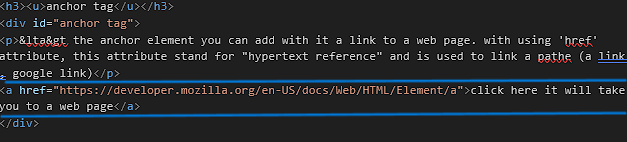
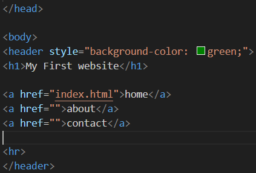
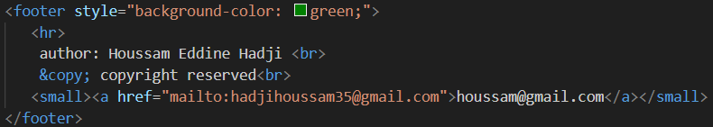
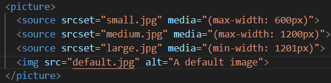
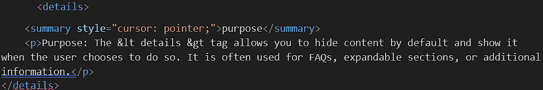
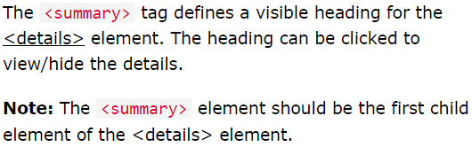

main tag
main tagis used to contain all of the contennt within our web page it helps with organization
body:(the web page background) once the files has a body many different types of content including (text,images,and buttons) can be added to the body
this is a h1 heading
h1 heading represent a section heading
this is a h2 heading
- html tag
- head tag
- title tag
- paragraph
- division
- identifier
- span
- text information
- list
- inserting a image
- alt function
- inframe
- video
- audio
- link tag
- anchor tag
this is a h3 heading
HTML files require certain element to set up the document property. we can let web browser know that we are using HTML by starting our document with a document type declaration.
the declaration look like this

html tag
<html> </html> tags are used to define the beginning and end of an HTML document. everything inside these tags is part of the HTML document structure
head tag
<head> </head> is used to contain meta information about the document (inside the head element is what appears to ypu when you search for website (title, description, website icon)
title tag
<title> </title> it's always inside the head element. what you write inside it it will be the name of your website it will appear in the web tab

paragraph
<p> element we can use it to organize and display text
division
< body >element is the parent of the (div)element it have the same function as (body)element.
the (div) element it's a block container to group element for styling. (and it divides the page into section)
<div> is a block level container when you apply a CSS styling to it, it takes the entire width of the document. (this is the different between it and the span element.
this is a div title
the div code we used to change the background-color is this

Note: after reading about span compare between it and the span for more understanding.
identifier
<id>: it's a attribute that create a division or section with a unique (identifier) allowing you to target that specific element with css and javascript.the id attribute can be used with any HTML element to uniquely identify it within the entire document
span
<span>:is inline container to group element for styling. (it's commonly used to apply CSSs styles or JAVASCRIPTaction to a specific part of text).
whatever is sandwiched between the pair of 'span' tags we can apply to the (text, sentence container) some CSS styling.
this is a span title
the span code we used to change the background-color is this:

Note: compare between the span and div for more understanding.
text information
this is a normal text
this is a normal text
the code that the used to make the word (normal) bold is: <b>normal</b>
this is a normal text
the code that the used to make the word (normal) italic is: <i>normal</i>
this is a normal text
the code we used to make underline under the word normal is:<u>normal</u>
this is a normal text
the code we used to delete the word normal is:<del>normal</del>
this is a normal text
the code we used to make the word normal a little bit bigger is: <big>normal</big>
this is a normal text
the code we used to make the word normal a little bit smaller is: <smal>normal</smal>
this is a normal text
the code we used to make the word normal smaller and just underneath the other text surrounding it. it called (subscript)
this is a normal text
the code we used to make the word normal smaller and just above the other text surrounding it. it called (supscript)
you can also combine these text information
this is a normal text
the code we used to make the word normal bold and underlined is: <b><u>normal</u></b>
list
to create a list we use this tag:<ul> and its for unordered lis
to create individual list we use this tag:<li>
- the first individual list
- the second individual list
this is the code to write unordered list

there is another type of list which is ordered list to writ it we use the flowing tag <ol>
and the same thing to use the individual list we write the same tag which is:<li>
- the first individual list
- the second individual list
this is the code used to write ordered list

there is a third type of listing it's called description list
description list: is made of key value pairs, you have a term and a definition
to create a description list you need a pair of <dl> tags (dl meaning description list) and for the terms you type <dt> then close it and for the description definition we need a pair of 'dd' tags
the following is a description list:
- programme:
- a set of related measures or activities with a particular long-term aim.
- protocol:
- a set of rules governing the exchange or transmission of data between devices.
this is how we create the above description list

inserting a image

if you put your image in folder for example called (images) the code line should be like the following

alt function
alt:used to describe an image for the following purposes
- if a image fail to load on a web page the user can read the image description and know what is't
- visually impaired users often brows the web with the aid of screen reding software so the software can read the image
inframe
if you wanna ad a youtube video to your page you cant use <video> it will not work because the <video> tag only supports local video files or direct links to video files like '.mp4','.ogg','.webm'. so to ad a youtube video we use <inframe> tag like the following

- purpose:controls whether a border is shown around the iframe.
- values:
- "0":no border
- "1":default value, displays a border
- Necessary?:not necessary. in modern html, you can use CSS to control the border instead.
- purpose:specifies a set of features that the iframe is allowed to use, providing a way to enable or disable certain browser features for the iframe. like in this example:
- accelerometer
- clipbord-write
- encrypted-media
- gyroscope
- picture-in-picture
- purpose: the accelerometer is a sensor that measures the acceleration of a device, usually in three axes (X,Y,Z). this sensor can detect movements like tilting, shaking, or rotation of the device.
- usage in 'iframe': when you allow the 'accelerometer', it means that the content inside the <infrzmeigt can access the device's accelerometer data. this is useful for web applications that might need to respond to physical movement, such as interactive games or apps that adjust the display based on the device's orientation.
- common use cases: typically used in games or interactive experiences that adapt based on how the device is moved. for example, a game might let you steer by tilting your phone (car's game)
- purpose: the clipbord is the part of your operating system that handles (cut, copy, paste) operation. 'clipbord-write' permission allows the content in the <inframe> to write data (text, images, etc) to the clipbord
- usage:when enabled, it allows the iframe's content to automatically copy text or other content to the clipbord without the user manually selecting and copying it. this can be used for features like "copy to clipbord" buttons on web pages.
- common use: used in applications where you want to provide a button that, when clicked, copies something directly to the clipbord, such as copying a URL, coupon code, or formatted text for easy pasting elsewhere.
- purpose:'encrypted-media' refers to media that is protected by DRM (digital rights management). DRM is a technology used to control how digital content is used and distributed, especially for protecting copyrighted material like movies, music, and videos.
- usage: allows the the content inside the inframe to access and play DRM-protected media. it is essential for streaming services like Netflix, youtube, or spotify, that require DRM to prevent unauthorized copying or distribution of content
- common use: necessary for playing video or music from services that enforce DRM, like watching a movie on Netflix or a music video on youtube that uses DRM.
- purpose: allows the video to be minimized to a small floating windows while the user interacts with other content.
- purpose: permits the embedded content (e.g., a youtube video) to be displayed in full-screen mode.
Note: the URL you use in 'inframe' tag should be embedded not shortened URL
the code used to write all the above (the explanation) is the following


video
this is the line of code used to display this video

note:sometimes if the name of the video is too longe the video may not work
audio
this is the line of code used to ad this audio

link tag
linking icon is for connects the HTML document to an icon (favicon) that appears in the browser tab
the code i used to put this icon is the flowing:

by setting rel="icon", you inform the browser that the linked file should be used as the favicon for the website. and because <link> is given information about website it should be in head element (to go up to the head tag)
anchor tag
<a> the anchor element you can add with it a link to a web page. with using 'href' attribute, this attribute stand for "hypertext reference" and is used to link a path (a link , google link)
click here it will take you to a web page
if you want to open the linked website in a new tab do this
click here it will take you to a web pagenot only that. if you create two HTML documents you can anchor in one of them into the author HTML document (as link) just by writing the name of the HTML page. for example if you create two HTML documents files we name the first'index.html' and the second one 'about.html', these two name ('index.html','about.html')are path. and this is how we can achieve this:
and also you can links a certain paragraph, section, division in the same page. like that
- <a>: this is the anchor tag used to create hyperlinks in HTML
- href attribute defines the destination of the link.
- the '#' symbol represents a fragment identifier, which typically refers to a specific section within the same page
this is the code used to write (click here it will take you to a web page) (the anchor)

this code will open the website that you linked it (using the <a> element with its 'href' attribute in the same window (page)
<a> href="about.html"> go to about page </a>

but for this code ( <a href="#html tag"> html tag </a> ) to work you should have (element, division,) with identifier (id) that have the same name (html tag)
and this is how we create the list above

with this code

you can also use it to begin the process of emailing someone bye using the 'mailto:' protocol in the 'href' attribute of the '<a>' tag. this will open the user's default email client with the email address already filled. here's how you can do it
 email me
email mewhen you click on the word email me
it will start the process
table
creating a table in HTML. involves using the '<table>' element, along with several other tags like '<tr>', '<td>', '<th>'. here's a breakdown of each tag and how they are used:
- <table>: this tag is used to define the start and end of a table.
- <tr>: this tag defines a table row. each row can contain multiple cells, and the cells is defined by '<th>' and <td>
- <th>: this tag is used for header cells, which are typically bold and centered by default
- <td>: this tag defines a table cell (our data cell). these are the cells in the cells in the table that hold the actual data.
this is my work schedule as physics teacher in high school in the year 2023/2024
| 8:00-9:00 | 9:00-10:00 | 10:00-11:00 | 11:00-12:00 | 13:00-14:00 | 14:00-15:00 | 15:00-16:00 | 16:00-17:00 | ||
|---|---|---|---|---|---|---|---|---|---|
| sunday | 3S2 group 1 |
3S2 group 2 |
|||||||
| monday | 3S2 | 1L1 | 1S2 group 1 |
1S2 group 2 |
|||||
| tuesday | |||||||||
| wednesday | 1L1 group 1 |
1L1 group 2 |
|||||||
| wednesday | 1S2 | 1S2 | 3S2 | ||||||
this is the code i used to draw this table


if you want to make for example the word sunday in the table from data to header you just change <td>sanday</td> to <th scope="row">sanday</th>. like this (sandy) will be a table header for the row because it is a table header for the row
we are going to explain each step and each attribute
border attribute: the word border within the table tag (<table border="1">), (border) used to define the width of the table's border. it specifies the thickness of the border in pixels. for example, border="1" create a 1-pixel-wide border around the table. and without it it will not be border
width attribute: the width attribute in the '<th>' and '<td>' tags (<th width="50">) and (<td width="50">) specifies the width of a table header cell or a table data cell ('<td>'), respectively. this attribute is used to set the width of individual table cells directly.
align attribute: the align attribute in the '<th>' and '<td>' tags (<th align="center">) and (<td align="center">) (instead of "center" you can use "left", "right" whatever you want) it used to alignment the content within the cell.
scope attribute: the scope attribute in the '<th>' tag (<th scope="row">) it's to define whether the header is for a row, or a column, or a group of columns, or a group of row. this attribute is particularly important for accessibility, as it helps screen readers and other assistive technologies understand the table's structure
row: this value makes it clear that the heading is for a row.
col: this value makes it clear that the heading is for a column.
rowgroup: this value indicates that the '<th>' is a header for a group of rows.
colgroup: this value indicates that the '<th>' is a header for a group of columns.
clospan attribute: the clospan attribute in the '<th>' and '<td>' tags (<th clospan="2">) and (<td clospan="2">) is used to specify the number of columns a cell should span across in a table (for example here we put 2, here it will make two cells into one cell, it depend on the number you put.) this attribute allows a single cell to extend horizontally over multiple columns
rowspan attribute: is used with the '<th>' and '<td>' element inside a table to make a cell span across multiple rows. this is useful when you want a cell to cover more than one row within a table.
example:
| Company Nam | number of Items to Ship | Item |
|---|---|---|
| Hadji Houssam | 2 | laptop |
| Tim-lee | 14 | SSd | 2 | tablets |
| Hakon Bos | 1 | microsd card |
the code used to create the table above (explaining the use of rowspan attribute):

the '<thead>', '<tbody>', '<tfoot>' elements: are used to organize and logically separate the header, body, and footer sections of a table without altering its structure or appearance.
- use '<thead>' to wrap the header rows (<tr>)
- use '<tbody' for the main data rows (<td>)
- use '<tfoot' for footer rows
these elements improve code readability, maintainability, and allow you to apply targeted CSS styles or javascript actions to specific table sections
button
<button>: the button tag create a clickable button on a webpage
this is the code used to create the button above

the word (click me) between the button tags is what you wanna be written inside the button
if you wanna style the button you can use CSS to change its appearance, we are gonna write some CSS styling (just to get a idea about CSS styling)
this is the code used for the button above

style: the style attribute is used to apply CSS directly to a HTML element. it allows you to define the styling property (like color, size, margin, etc)
click me to return back downbackground-color: the background-color property in CSS specifies the color that will fill the background of an element, like a button, div, or the entire page.
font-size: the font-size property in CSS specifies the size of the text within an element.
color: the color property in CSS specifies the color of text
border-radius: property in CSS used to create rounded corners on element, such as button, boxes, or images.
if you want a button to act as link, you should use an anchor ('<aegt') element styled as button with CSS. ( you can wrap a '<button>' element with an '<a>' tag, but doing that it will cause several issues:
- Semantics: the '<button>' element is designed for form submissions and interactive actions, while the '<a>' element is intended for navigation.Wrapping a '<button>' in an '<a>' tag can lead to semantic confusion and potentially impact accessibility
- behavior: Wrapping a '<button>' inside '<aegt' tag can cause unexpected behavior. the button's built-in functionality and styles might conflict with the link's behavior, leading to issues with interaction and styling
- accessibility: screen readers and other assistive technologies might have difficulty interpreting the wrapped structure, which can negatively impact users relying on these tools.
but if you wanna do it, this how:

but if you wanna avoid all the issues mentioned above about using wrapped button element with an anchor element you can used CSS styling to make an anchor element look like a button. and this is how:
click me
the above is the CSS code used to style the anchor to look like a button. and we gonna explain the attribute used in it.
,
,
,
,
we have explained all these property and the style tag. click on what you want to go back to, an read it. it will take you there.
form tag
form tag: form tag is used to creat a form for collectin user input. it acts as a container for various input elements like text fields, checkboxes, radio buttons, and submit buttons, allwing users to submit data to a server for processing.
action attribute: it's one of the form tag attribute specifies the destination URL where the form data will be sent for processing.
- the server-side script at this URL, such as PHP file for example ( <form action="submit_form.php">) the (submit_form.php) is the URL (the name of the file where the form data will be sent for processing) wich may include storing it in a database, performing calculations, or generating a response for user and the PHP cript send the data for example to MYSQL database.
method attribute: the method attribute in the form tag specifies how thr form data will be sent to the server when the form is submitted. there are two main methods: 'get' and 'post'.
- get method: with 'get', the form data is appended to the URL in the browser's address bar as query parameters (eg., '?name=houssam&age=27').
- post method: with post, the form data is sent in the body of the HTTP request, not in the URL. this method is more secure because the data is not visible in the URL unlike get.
and many author attribute
here is a example for the form tag:
this is the code used to creat the form above

the form has two input fields: one for the the username and another for the password.when the user clicks the "submit" button, the form will send the entered username and password to a PHP script named "format.php" using the HTTP POST method.(the format will not work because i didnt create the "format.php" file)
input tag: the input tag used to create various types of user interactive elements, such as text fields, checkboxes, radio buttons, and bottons. this why it use inside form tag
attributes of input tag:
- type: specifies the type of input control. example include:
- text: single-line text field.
- password: password field (text is hidden).
- submit: submit button.
- checkbox: checkbox
- radio: radio button. (once a rdio button is selected, it cannot be unchecked individually. instead, selecting a different radio button in the same group will automatically unselect the previously selected button)
- file: file upload field.
- email: email input field.
label tag: the label tag is used to define a label for an input element in a form. it provide a description for the input field.
- for attribute: associates the label with a specific input element by matching the 'id'(id it an attribute) of the input. this helps users who rely on screen readers.
name attribute: in a input tag (and other form element like '<select>', 'elttextarea>', etc.) is used to specify a name for the form data that the input element represent.this name is key when the form is submitted, as it is used to identify the data in the form submission
meaning when create an input with (type="text") and give it a name attribute (for example, name="username"), the server-side script will understand and process the data as key-value pair.

here's how it works:
it the user enters "Houssam" in the text field with (name="usename"), the form data sent to the server will look something like this
username=Houssam
the server-side script (like PHP, Python, etc.) will then interpret this as:
key: "username
value: "Houssam"
textarea tag
the <textarea> is uded to create a multi-line text input field, allwing users to enter larger amounts of text, such as comments, description, or messages.
this is the code used for the text area above

select tag
select tag is used to create a drop-down list that allow users to select one more options from a predefined list. this tag is commonly used in forms where users need to choose from a list of options, such as selecting a country, a category, or a product variant.
each option within the drop-down is represented by an (<option>) tag.
attributes like (name, id, multiple, size.) control the behavior and appearance of the drop-down list.
- multiple attribute: allows users to select more than one option by holding down the (Ctrl key in windows or comand key in mac) while selecting. but this attribute works effectively when the size attribute is set to a value greater than 1.
- size attribute: determines the number of options visible without scrolling. if size="3" , three optins are visible.
basic structure of <select>:
value attribute: the value attribute in option tag determines what data is sent to the server when a form is submitted.
this is how i create the form below

header and footer
header element
<header>: is used to contain introductory contennt or navigational link at the top of your page. it usully includes element like:
- a logo or branding
- navigation menus
- headings
the header of this page

this is how it created

the (about and contact) links will not work because i didnt creat thesse files
fieldset and legend tags
<fieldset>: groups related form elements together visually and semantically.
<legend>: provides a title for the grouped elements inside a <fieldset>.
Example of form without fieldest and legend tags:

Example of form with fieldest and legend tags:

datalist tags
< datalist >: the datalist tag in HTML is used to provide an "autocomplete" feature for an < input > element, allowing users to choose from a list of predefined options as they type. It is a useful way to offer suggestions or restrict input to specific values without limiting the user to a drop-down menu.
Explanation:
- The < input > element with the list attribute is linked to the > datalist > by matching the list attribute value with the id of the < datalist >.
- As the user starts typing in the input field, the browser will show a drop-down list of the options defined in the < datalist >.
this is the code used to creat this datalist field

footer element
<footer>: act as a container for holding concluding content at the bottom of your page like:
- author or copyright information
- contact details
- links to privacy policies, terms of service, etc.
- social media links
- site map link
the footer of this page

this is how it created

semantic elements
nav tag:
aside tag:
aside tag: it's a semantic element used to represent content that is tangentially related to the main content of the page.this content is often presented as a sidebar or box of supplementary information, such as adertisements, side notes, or related links.
this is how it make

Note: ('aside' element (like other block-level element) will take up the full width availbale to it, stacking vertically with other elements on the page. to place it on the side or control its position on the page, you'll need to use CSS for styling and positioning)
section tag
section tag: is used to define a section of document, grouping related content together to make it easier to structure and navigate a webpage. it's organization and meaning of the content, especially when paired with headings. each '<section>>' should ideally containt a thematic grouping of content, making the webpage more organized and semantically meaningful.
article tag
article tag: article tag is a semantic element used to represent a self-contained piece of content tha can be independently distributed or rused. this content could be a blog post, a news article, a forum post, a commment, or any other type of content that makes sense on its own.
picture tag: The <picture> tag offers more flexibility than the <img> tag for displaying images based on conditions like screen size or device type.
Key Differences:
- Basic Use:
- <img>: Displays a single image.
- <picture>: >: Allows multiple <source> elements to specify different images or formats based on conditions, with <img> as a fallback.
- Responsive Images:
- <img>: Uses srcset and sizes for basic responsiveness.
- <picture>: Provides advanced control for responsive design, allowing different images for various device conditions.
- Art Direction:
- <img>: Limited to size or pixel density adjustments.
- <picture>: Ideal for art direction, displaying different images based on screen size or device type.
Example:

- small.jpg for screens up to 600px.
- medium.jpg for screens between 601px and 1200px
- large.jpg for screens above 1200px.
- default.jpg as fallback.
Recommended Image Sizes for Different Devices
- Phones (Small Screens):
- Width: 320px to 480px
- Image Size Example: 640px wide (for higher resolution devices, consider using images at 2x or 3x the display size, e.g., 1280px or 1920px)
- Tablets (Medium Screens):
- Width: 768px to 1024px
- Image Size Example: 1024px wide (for high-resolution tablets, consider images at 2x or 3x the display size, e.g., 2048px or 3072px)
- Desktops (Large Screens):
- Width: 1280px and above
- Image Size Example: 1280px to 1920px wide (for high-resolution desktops, consider images at 2x or 3x the display size, e.g., 2560px or 3840px)
details tag
The < details > tag in HTML is used to create a collapsible content block that the user can open and close. Its commonly used to provide additional information or details that aren't necessary to display upfront but can be accessed when needed.
details
purpose
Purpose: The < details > tag allows you to hide content by default and show it when the user chooses to do so. It is often used for FAQs, expandable sections, or additional information.

Explanation
- The < summary > tag inside < details > acts as the visible heading that users click to toggle the visibility of the content.
- The content inside the < details > (like the paragraph < p > ...) is initially hidden and only becomes visible when the user clicks on the summary.

abbr tag
The < abbr > tag is used in HTML to mark an abbreviation or acronym. When you add a title attribute to this tag, it shows the full form of the abbreviation when someone hovers over it. and Helps screen readers provide the full meaning of the abbreviation.
Example:
HTML is the standard language used to create and structure content on the web. It uses a system of tags to define elements like text, images, links, and more, providing the basic building blocks for webpages.

cite tag
The < cite > tag in HTML is used to reference the title of a creative work, such as a book, article, film, or other source. It is typically used to provide a citation or to identify the source of a quote or piece of information.
meta tag
CSS
definition: CSS it is used to apply styles such as colors, fonts, and layout design to HTML markup. there are three different ways to apply CSS to your HTML:
- inline CSS: CSS is applied directly to HTML elements using the 'style' attribute
- internal CSS: CSS is written within a '< style >' tag inside the '< head >' section of the HTML document
- if you dont assign a class or ID to an element and you use a style rule in the '< head >' section that target all elements of a certain type (e.g., all '< p >' tags), then every instance of that element in the document will have the same style applied to it.
- you can target specific element by using classes or IDs.
- to style a specific word within for exampple a list item ('< Li >') using internlal CSS, you can wrap that specific word in a tag like '< span >' and then target that tag with CSS.
- firstly we give a class to the element we want to style it
- secondly we target that tag with CSS.
this is an example of inline CSS:

this an example of an internal CSS: